deck acting covering like
1. Proposition
Let  be a topological space,
be a topological space,
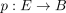
a connected covering. Then the deck group canonically acts covering-like on
2. Proof
Let
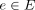
, then choose an open neighbourhood which restricts to a homeomorphism
which restricts to a homeomorphism 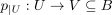
let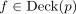
, such that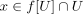
. Then there exists an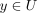
such that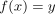
furthermore, by commutativity of
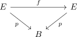
it holds, that
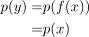
and since  is a homeomorphism especially also injective, thus
is a homeomorphism especially also injective, thus
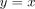
Since the deck action from a connected space is a free action, we conclude, that
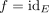
, hence acting covering like